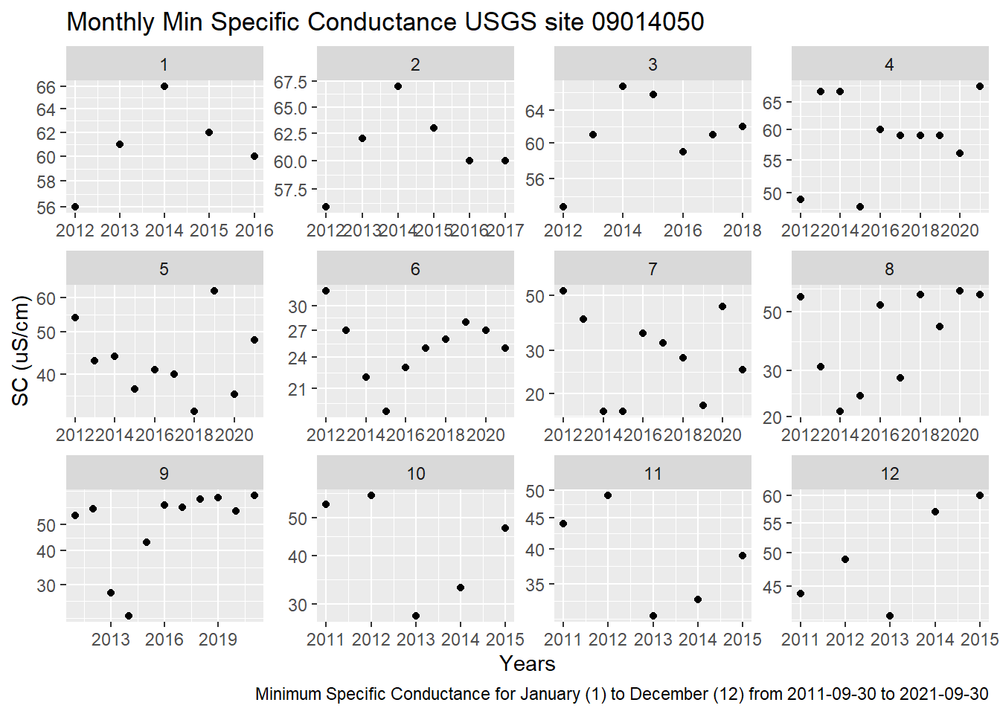
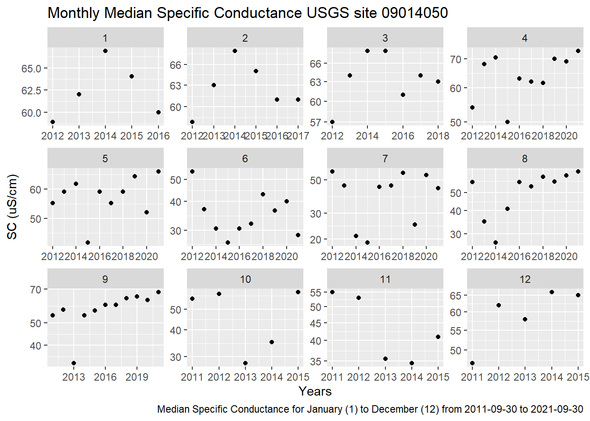

3 Results
3.1 Discharge Data
3.1.1 Plotted Data
# Plot for discharge
ggplot(q, aes(x = Date, y = q_cfs)) +
geom_line() +
ylab('Q (cfs)')## Warning: Removed 38 row(s) containing missing values (geom_path).
3.1.2 Trending Month Mean, Min, and Median Data
ggplot(q_month_means, aes(x = year, y = q_mean))+
geom_point()+
facet_wrap(~month, scales ='free',)+
scale_y_log10()+
labs(title = 'Monthly Mean Dishcarge',
caption = 'Mean dishcarge for January (1) to December (12) from the year 1986 to 2021',
x = 'Q (cfs)',
y = 'Years')## Warning: Removed 2 rows containing missing values (geom_point).
ggplot(q_month_mins, aes(x = year, y = q_min))+
geom_point()+
facet_wrap(~month, scales ='free')+
scale_y_log10()+
labs(title = 'Monthly Minimum Discharge',
caption = 'Minimum dishcarge for January (1) to December (12) from the year 1986 to 2021',
x = 'Q (cfs)',
y = 'Years')## Warning: Removed 3 rows containing missing values (geom_point).
ggplot(q_month_medians, aes(x = year, y = q_median))+
geom_point()+
facet_wrap(~month, scales ='free')+
scale_y_log10()+
labs(title = 'Monthly Median Discharge',
caption = 'Median dishcarge for January (1) to December (12) from the year 1986 to 2021',
x = 'Q (cfs)',
y = 'Years')## Warning: Removed 3 rows containing missing values (geom_point).
3.2 Specific Conductance Data
3.2.1 Plotted Data
# Plot for specific conductance
ggplot(sc, aes(x = Date, y = sc_uscm)) +
geom_point(size = 1) +
geom_line(size = 0.5) +
labs(title = 'Specific Conductance USGS site 09034250',
caption = 'Specific Conductance data from USGS site 09034250 from 2021-06-24 to 2021-09-30',
x = 'Date',
y = 'SC (uS/cm)')
ggplot(sc2, aes(x = Date, y = sc_uscm)) +
geom_point(size = 1) +
geom_line(size = 0.5) +
labs(title = 'Specific Conductance USGS site 09040500',
caption = 'Specific Conductance data from USGS site 09040500 from 2021-06-08 to 2021-09-30',
x = 'Date',
y = 'SC (uS/cm)')
ggplot(sc3, aes(x = Date, y = sc_uscm)) +
geom_point(size = 1) +
geom_line(size = 0.5) +
labs(title = 'Specific Conductance USGS site 09014050',
caption = 'Specific Conductance data from USGS site 09014050 from 2011-09-30 to 2021-09-30',
x = 'Year',
y = 'SC (uS/cm)')
3.2.2 Trending Months Mean, Min, and Median Data
ggplot(sc3_month_means, aes(x = year, y = sc3_mean))+
geom_point()+
facet_wrap(~month, scales ='free',)+
scale_y_log10()+
labs(title = 'Monthly Mean Specific Conductance USGS site 09014050',
caption = 'Mean Specific Conductance for January (1) to December (12) from 2011-09-30 to 2021-09-30',
x = 'Years',
y = 'SC (uS/cm)')
ggplot(sc3_month_min, aes(x = year, y = sc3_min))+
geom_point()+
facet_wrap(~month, scales ='free',)+
scale_y_log10()+
labs(title = 'Monthly Min Specific Conductance USGS site 09014050',
caption = 'Minimum Specific Conductance for January (1) to December (12) from 2011-09-30 to 2021-09-30',
x = 'Years',
y = 'SC (uS/cm)')
ggplot(sc3_month_median, aes(x = year, y = sc3_median))+
geom_point()+
facet_wrap(~month, scales ='free',)+
scale_y_log10()+
labs(title = 'Monthly Median Specific Conductance USGS site 09014050',
caption = 'Median Specific Conductance for January (1) to December (12) from 2011-09-30 to 2021-09-30',
x = 'Years',
y = 'SC (uS/cm)')